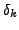
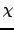
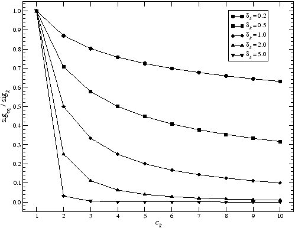
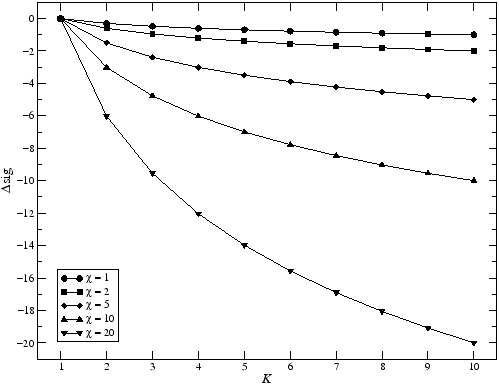

Next: Reliability and sensitivity
Up: How COMBINE Works
Previous: Limit of harmonic order
Contents
Equivalent sig
Each linear combination is assigned an equivalent sig,
where  denotes the decay parameter provided by the keyword decay, and  is the combination damping, specified using the keyword cdamp. Both keywords are followed by floating-point numbers. The default values for both parameters are  .
.
Figure 1:
Ratio of equivalent sig over sig of an individual signal component vs. polynomial coefficient  associated to the signal component. Five graphs for different values of the decay parameter
associated to the signal component. Five graphs for different values of the decay parameter  are presented.
are presented.
|

|
Fig.1 displays the relative sig correction with increasing coefficient for five different values of the decay parameter . Fig.2 illustrates the correction of equivalent sig with increasing number of components contributing to a linear combination  for five different values of the combination damping .
for five different values of the combination damping .
Figure 2:
Additive significance correction for a linear combination employing different signal components. Five graphs for different values of the combination damping are presented.
|

|
Next: Reliability and sensitivity
Up: How COMBINE Works
Previous: Limit of harmonic order
Contents
Piet Reegen
2009-09-23